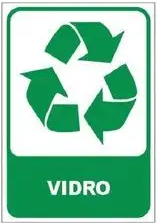

Um Guia Simples para a Separação do Lixo
1. O Que Podemos Reciclar?
• Papel
- Jornais
- Revistas
- Caixas de papelão (desmontadas)
- Sacos de papel
- Embalagens de leite e iogurte (limpas e secas)
- Outros papéis (sempre limpos e secos)
• Plástico
- Garrafas PET (refrigerantes, água, etc.)
- Embalagens plásticas (alimentos, produtos de limpeza, etc.)
- Potes de cremes e cosméticos (limpos e secos)
- Brinquedos de plástico
- Sacolas plásticas (limpas e secas)

• Vidro
- Garrafas em geral (cerveja, suco, etc.)
- Potes de vidro (alimentos, conservas, etc.)
- Jarros de vidro
- Vidros de conserva (limpos e sem tampa)
- Utensílios domésticos de vidro (copos, pratos - se forem para reciclagem)
2. Como Fazer a Coleta Seletiva em Casa?
Sacos Transparentes
Utilize sacos transparentes para embalar os materiais recicláveis. Isso facilita a identificação por parte dos coletores e nas centrais de triagem.
Lixeiras Coloridas: Sua Aliada na Reciclagem
- Azul: Para Papel
- Vermelho: Para Plástico
- Amarelo: Para Metal
- Verde: Para Vidro
Se possível, utilize lixeiras de cores diferentes para cada tipo de material. Isso torna a separação mais organizada e eficiente.
Organize-se em Casa
Tenha uma lixeira específica para cada tipo de resíduo reciclável em sua casa. Isso simplifica o processo de separação no dia a dia.
Juntos Podemos Fazer a Diferença!
- Ao separar o lixo corretamente, você contribui para um planeta mais limpo e saudável.
- A reciclagem economiza recursos naturais, energia e reduz a poluição.
- Ajude a construir um futuro mais sustentável para todos!

Contatos para +Informações:
Para mais informações e ações ambientais, consulte também:
Secretaria de Estado do Meio Ambiente e Recursos Naturais do Maranhão (SEMAM): semam.ma.gov.br
Governo do Maranhão: maranhao.ma.gov.br
Redes sociais oficiais da SEMAM:
- Facebook: facebook.com/semamma – Para atualizações, campanhas e notícias ambientais.
- Instagram: instagram.com/semamma – Conteúdo visual, eventos e conscientização ambiental.
- Twitter: twitter.com/semamma – Informações rápidas e comunicados oficiais.